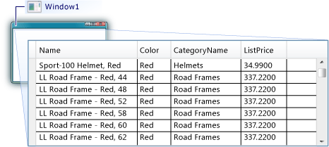

Пошаговое руководство. Отображение данных из базы данных SQL Server в элементе управления DataGrid
В этом пошаговом руководстве, получения данных из базы данных SQL Server и отображение их в DataGrid элемента управления. Использовать ADO.NET Entity Framework для создания классов сущностей, которые представляют данные и использовать LINQ для записи запроса, который получает указанные данные из класса сущностей.
Предварительные требования
Ниже приведены компоненты, необходимые для выполнения данного пошагового руководства.
Visual Studio.
Доступ к запущенному экземпляру SQL Server или SQL Server Express с образца базы данных AdventureWorks, подключенные к ней. Можно загрузить из базы данных AdventureWorks GitHub.
Создайте классы сущностей
Создайте новый проект приложения WPF в Visual Basic или C# и назовите его
DataGridSQLExample.В обозревателе решений щелкните правой кнопкой мыши проект, выберите пункт добавить, а затем выберите новый элемент.
Будет открыто диалоговое окно Добавление нового элемента.
На панели "Установленные шаблоны", выберите данных и в списке шаблонов выберите ADO.NET Entity Data Model.

Назовите файл
AdventureWorksModel.edmxи нажмите кнопку добавить.Появится мастер модели EDM.
На экране «Выбор содержимого модели» выберите конструктор EF из базы данных и нажмите кнопку Далее.
На экране «Выбор подключения к данным» обеспечивают подключение к базе данных AdventureWorksLT2008. Дополнительные сведения см. в разделе выберите Your данных диалогового окна соединения.
Убедитесь, что имя указано
AdventureWorksLT2008Entitiesи что сохранить настройки подключения сущности в App.Config как флажок выбран и нажмите кнопку Далее.На экране «Выбор объектов базы данных» разверните узел таблицы и выберите продукта и ProductCategory таблиц.
Можно создавать классы сущностей для всех таблиц; Тем не менее в этом примере извлекаются данные только из этих двух таблиц.
Нажмите кнопку Готово.
Сущности Product и ProductCategory, отображаются в конструкторе сущностей.
Извлечение и представление данных
Откройте файл MainWindow.xaml.
В редакторе XAML добавьте следующий DataGrid тег между
<Grid>и</Grid>теги для добавления DataGrid с именемdataGrid1.<DataGrid Name="dataGrid1" />Выберите Window.
С помощью окна свойств или редактор XAML, создайте обработчик событий для Window с именем
Window_Loadedдля Loaded событий. Дополнительные сведения см. в разделе Как Создание простого обработчика событий.Ниже показан XAML для MainWindow.xaml.
Note
Если вы используете Visual Basic, в первой строке файла MainWindow.XAML, замените
x:Class="DataGridSQLExample.MainWindow"сx:Class="MainWindow".<Window x:Class="DataGridSQLExample.MainWindow" xmlns="http://schemas.microsoft.com/winfx/2006/xaml/presentation" xmlns:x="http://schemas.microsoft.com/winfx/2006/xaml" Title="MainWindow" Height="350" Width="450" Loaded="Window_Loaded"> <Grid> <DataGrid Name="dataGrid1" /> </Grid> </Window>Откройте файл с выделенным кодом (MainWindow.xaml.vb или MainWindow.xaml.cs) для Window.
Добавьте следующий код, чтобы получить только определенные значения из соединяемых таблиц и задать ItemsSource свойство DataGrid к результатам запроса.
using System.Data.Entity.Core.Objects; using System.Linq; using System.Windows; namespace DataGridSQLExample { /// <summary> /// Interaction logic for MainWindow.xaml /// </summary> public partial class MainWindow : Window { AdventureWorksLT2008Entities dataEntities = new AdventureWorksLT2008Entities(); public MainWindow() { InitializeComponent(); } private void Window_Loaded(object sender, RoutedEventArgs e) { var query = from product in dataEntities.Products where product.Color == "Red" orderby product.ListPrice select new { product.Name, product.Color, CategoryName = product.ProductCategory.Name, product.ListPrice }; dataGrid1.ItemsSource = query.ToList(); } } }Запустите пример.
Вы должны увидеть DataGrid , отображающий данные.
